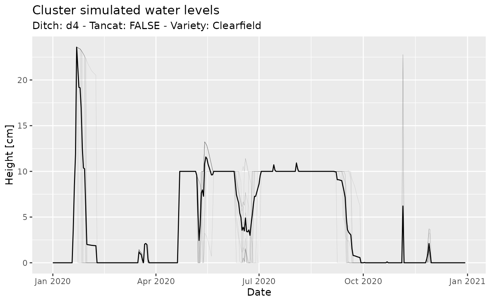

This document illustrates the simulation workflow of ERAHUMED. Specifically, we will cover:
- How to setup and run a simulation.
- How to extract and analyze simulation results.
This guide is addressed to users working with the command-line (i.e. R) interface of erahumed.
We initialize a new ERAHUMED simulation with:
sim <- erahumed_simulation()
sim
#> An ERAHUMED simulation.
#> Computed layers: NoneAt this stage, sim is simply a list of simulation
parameters, all initialized to their default values. To customize these
parameters, we use setup_hydrology(),
setup_exposure(), and setup_risk(). These
functions provide access to the specific subset of parameters associated
with the hydrology, exposure, or risk components of the simulation,
respectively. For instance, the following command modifies the “height
threshold” numeric parameter and provides a custom
outflows_df input data-set with a reduced date range (see
?setup_hydrology for the detailed documentation of these
parameters):
outflows_df <- albufera_outflows |>
(\(.) .["2020-01-01" <= .$date & .$date <= "2020-12-31", ])()
sim <- sim |>
setup_hydrology(height_thresh_cm = 1, outflows_df = outflows_df)Once we are ready with our simulation setup, in order to actually run the simulation we use:
sim <- sim |>
run_simulation()
sim
#> An ERAHUMED simulation.
#> Computed layers: inp, hbl, hbc, hbd, ca, ctc, ctd, ctl, rc, rd, rlIn order to extract simulation results we use:
lake_hydrology_df <- get_results(sim, component = "hydrology", element = "lake")
cluster_hydrology_df <- get_results(sim, component = "hydrology", element = "cluster")
cluster_exposure_df <- get_results(sim, component = "exposure", element = "cluster")These are provided in the form of data.frames, for
instance:
head(cluster_hydrology_df)
#> ideal_height_eod_cm ideal_irrigation ideal_draining petp_cm area_m2
#> 1 20 TRUE TRUE -0.058 114881.78
#> 2 20 TRUE TRUE -0.058 116539.90
#> 3 20 TRUE TRUE -0.058 154730.35
#> 4 20 TRUE TRUE -0.058 163789.56
#> 5 20 TRUE TRUE -0.058 83016.51
#> 6 20 TRUE TRUE -0.058 106260.07
#> capacity_m3_s date cluster_id ditch seed_day tancat
#> 1 0.03448408 2020-01-01 02_Carrera_del_Saler0-2_0 d2 -110 TRUE
#> 2 0.03448408 2020-01-01 03_Petxinar0-3_2 d2 -110 TRUE
#> 3 0.03448408 2020-01-01 03_Petxinar0-3_3 d2 -110 TRUE
#> 4 0.03448408 2020-01-01 03_Petxinar1-3_1 d2 -110 TRUE
#> 5 0.03448408 2020-01-01 03_Petxinar1-3_2 d2 -110 TRUE
#> 6 0.03448408 2020-01-01 03_Petxinar1-3_3 d2 -110 TRUE
#> variety height_sod_cm irrigation draining ideal_diff_flow_cm
#> 1 Bomba 20 TRUE TRUE 0.058
#> 2 Clearfield 20 TRUE TRUE 0.058
#> 3 Clearfield 20 TRUE TRUE 0.058
#> 4 J.Sendra 20 TRUE TRUE 0.058
#> 5 J.Sendra 20 TRUE TRUE 0.058
#> 6 Clearfield 20 TRUE TRUE 0.058
#> ideal_inflow_cm ideal_outflow_cm outflow_m3_s outflow_cm inflow_cm
#> 1 5 4.942 0 0 0.058
#> 2 5 4.942 0 0 0.058
#> 3 5 4.942 0 0 0.058
#> 4 5 4.942 0 0 0.058
#> 5 5 4.942 0 0 0.058
#> 6 5 4.942 0 0 0.058
#> inflow_m3_s height_eod_cm plan_delay
#> 1 0.0007711971 20 0
#> 2 0.0007823281 20 0
#> 3 0.0010386991 20 0
#> 4 0.0010995133 20 0
#> 5 0.0005572868 20 0
#> 6 0.0007133199 20 0From here on, the analysis may proceed in the way you find more
convenient. For instance, in the chunk below I create a plot of water
levels for a set of clusters with similar features, using
dplyr and ggplot2:
library(dplyr)
library(ggplot2)
ditch <- "d4"
tancat <- FALSE
variety <- "Clearfield"
clusters_df <- cluster_hydrology_df |>
filter(ditch == !!ditch, tancat == !!tancat, variety == !!variety)
avg_df <- clusters_df |>
group_by(date) |>
summarise(height_eod_cm = mean(height_eod_cm))
ggplot() +
geom_line(
data = clusters_df,
mapping = aes(x = date, y = height_eod_cm, group = cluster_id),
color = "black", linewidth = 0.1, alpha = 0.2) +
geom_line(
data = avg_df,
mapping = aes(x = date, y = height_eod_cm),
color = "black"
) +
xlab("Date") + ylab("Height [cm]") +
ggtitle("Cluster simulated water levels",
paste("Ditch:", ditch, "- Tancat:", tancat, "- Variety:", variety)
)
Further information
Further details will appear in this and possibly other vignettes. For specific problems, you can file an issue on Github.